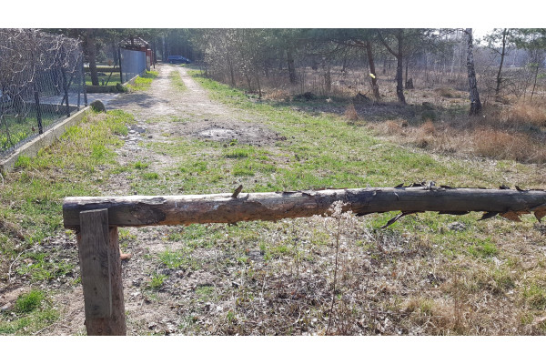

LAS I SPOKÓJ
419 000 PLN
Numer oferty
Typ transakcji
Cena
Powierzchnia
Cena za m2
Przeznaczenie
Typ działki
Typ ogrodzenia
Typ drogi
Forma własności
Prąd
Woda
Gaz
Kanalizacja
Pozw. na bud.
13
Sprzedaż
419 000 PLN
2 000 m2
210 PLN / m2
budownictwo jednorodzinne
budowlana
brak
inna
własność
jest
w drodze
w drodze
szambo
na budowę domu jednorodzinnego
|  |
Schowana działka (jedna z dwóch) w Malcanowie to idealna oferta dla ludzi pragnących poczuć bliskość lasu i odpocząć od zgiełku miasta. Media już są nawet internet. Brakuje kanalizacji trzeba będzie pomyśleć o szambie lub oczyszczalni. Dojazd przez las drogą ubitą, ale za to po kilku minutach przejazdu od głównych dróg asfaltowych, przenosimy się do magicznego świata drzew i krzewów. Sąsiedztwo miłe i zgrane. W lesie, w pobliżu, staw i dużo grzybów. Bliskość natury i spokój aż kipi z tych działek. Przekonaj się sam!